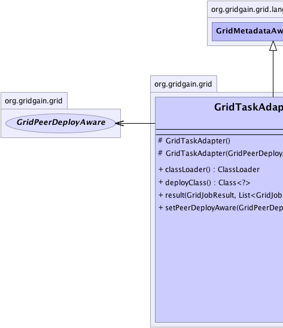
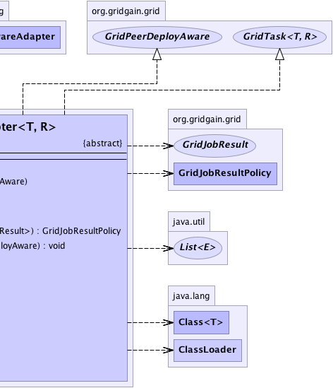

org.gridgain.grid.lang.GridMetadataAwareAdapter
org.gridgain.grid.GridTaskAdapter<T,R>
org.gridgain.grid.lang.GridMetadataAwareAdapter
org.gridgain.grid.GridTaskAdapter<T,R>
|
GridGain™ 3.6.0c
Community Edition |
|||||||||
| PREV CLASS NEXT CLASS | FRAMES NO FRAMES | |||||||||
| SUMMARY: NESTED | FIELD | CONSTR | METHOD | DETAIL: FIELD | CONSTR | METHOD | |||||||||
java.lang.Object
T - Type of the task argument.R - Type of the task result returning from GridTask.reduce(List) method.public abstract class GridTaskAdapter<T,R>
Convenience adapter for GridTask interface. Here is an example of
how GridTaskAdapter can be used:
public class MyFooBarTask extends GridTaskAdapter<String, String> {
// Inject load balancer.
@GridLoadBalancerResource
GridLoadBalancer balancer;
// Map jobs to grid nodes.
public Map<? extends GridJob, GridNode> map(List<GridNode> subgrid, String arg) throws GridException {
Map<MyFooBarJob, GridNode> jobs = new HashMap<MyFooBarJob, GridNode>(subgrid.size());
// In more complex cases, you can actually do
// more complicated assignments of jobs to nodes.
for (int i = 0; i < subgrid.size(); i++) {
// Pick the next best balanced node for the job.
jobs.put(new MyFooBarJob(arg), balancer.getBalancedNode())
}
return jobs;
}
// Aggregate results into one compound result.
public String reduce(List<GridJobResult> results) throws GridException {
// For the purpose of this example we simply
// concatenate string representation of every
// job result
StringBuilder buf = new StringBuilder();
for (GridJobResult res : results) {
// Append string representation of result
// returned by every job.
buf.append(res.getData().string());
}
return buf.string();
}
}
For more information refer to GridTask documentation.
| Wiki | |
| Forum |
|  |  |
| Constructor Summary | |
|---|---|
protected |
GridTaskAdapter()
Empty constructor. |
protected |
GridTaskAdapter(GridPeerDeployAware pda)
Constructor that receives deployment information for task. |
| Method Summary | |
|---|---|
ClassLoader |
classLoader()
Gets class loader for the class. |
Class<?> |
deployClass()
Gets top level user class being deployed. |
GridJobResultPolicy |
result(GridJobResult res,
List<GridJobResult> rcvd)
Default implementation which will wait for all jobs to complete before calling GridTask.reduce(List) method. |
void |
setPeerDeployAware(GridPeerDeployAware pda)
Sets deployment information for this task. |
| Methods inherited from class org.gridgain.grid.lang.GridMetadataAwareAdapter |
|---|
addMeta, addMetaIfAbsent, addMetaIfAbsent, allMeta, clone, copyMeta, copyMeta, hasMeta, hasMeta, meta, putMetaIfAbsent, putMetaIfAbsent, readExternalMeta, removeMeta, removeMeta, replaceMeta, writeExternalMeta |
| Methods inherited from class java.lang.Object |
|---|
equals, finalize, getClass, hashCode, notify, notifyAll, toString, wait, wait, wait |
| Methods inherited from interface org.gridgain.grid.GridTask |
|---|
map, reduce |
| Constructor Detail |
|---|
protected GridTaskAdapter()
protected GridTaskAdapter(GridPeerDeployAware pda)
pda - Deployment information.| Method Detail |
|---|
public Class<?> deployClass()
deployClass in interface GridPeerDeployAwarepublic ClassLoader classLoader()
GridPeerDeployAware.deployClass() as well as all of its
dependencies.
Note that in most cases the class loader returned from this method
and the class loader for the class returned from GridPeerDeployAware.deployClass() method
will be the same. If they are not the same, it is required that the class loader
returned from this method still has to be able to load the deploy class and all its
dependencies.
classLoader in interface GridPeerDeployAwarepublic void setPeerDeployAware(GridPeerDeployAware pda)
pda - Deployment information.
public GridJobResultPolicy result(GridJobResult res,
List<GridJobResult> rcvd)
throws GridException
GridTask.reduce(List) method.
If remote job resulted in exception (GridJobResult.getException() is not null),
then GridJobResultPolicy.FAILOVER policy will be returned if the exception is instance
of GridTopologyException or GridExecutionRejectedException, which means that
remote node either failed or job execution was rejected before it got a chance to start. In all
other cases the exception will be rethrown which will ultimately cause task to fail.
result in interface GridTask<T,R>GridException - If handling a job result caused an error effectively rejecting
a failover. This exception will be thrown out of GridTaskFuture.get() method.res - Received remote grid executable result.rcvd - All previously received results.
|
GridGain™ 3.6.0c
Community Edition |
|||||||||
| PREV CLASS NEXT CLASS | FRAMES NO FRAMES | |||||||||
| SUMMARY: NESTED | FIELD | CONSTR | METHOD | DETAIL: FIELD | CONSTR | METHOD | |||||||||
|
GridGain - Real Time Big Data
|
|

|
|